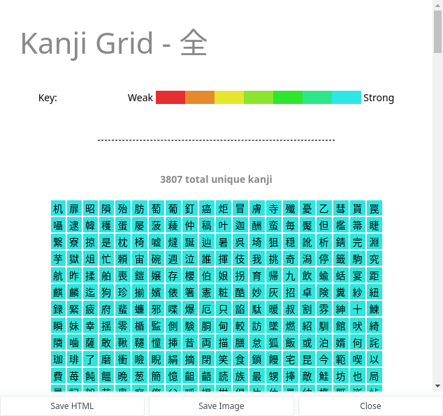
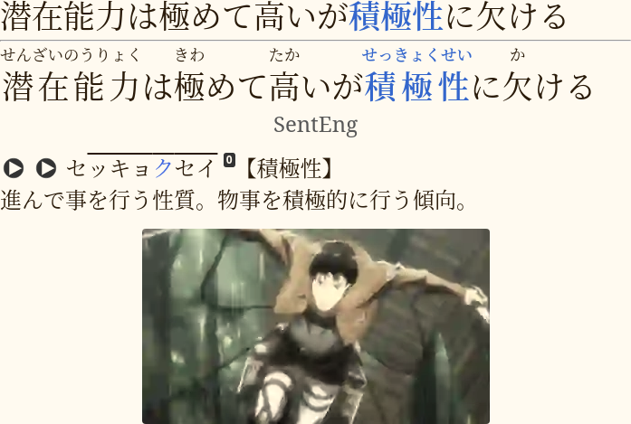
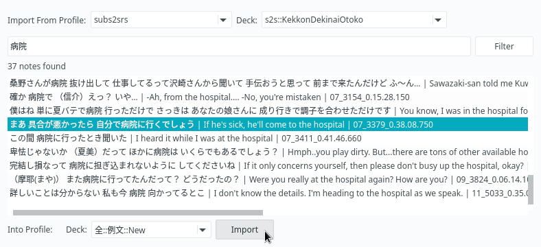
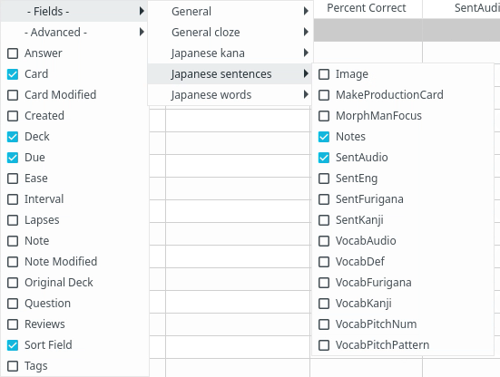

Useful Anki add-ons for Japanese
I often get asked in the chats what add-ons are recommended for learning Japanese. mattvsjapan has a video on this topic, and although a few years have passed, surprisingly there haven't been many new Anki add-ons worth recommending. Below I'm going to mention add-ons from the video, as well as add a few extra ones from myself.
Add-ons worth trying
Japanese support
The most important add-on you'll need is Japanese support. It's primary and only feature is generating furigana, which you're going to need every day.
The add-on comes bundled with its own Note Types but they are quite bare bones, so I highly recommend you try this Note Type as it's a lot more versatile.
Below are my settings for this add-on
{
"dstFields": [
"SentFurigana",
"VocabFurigana"
],
"furiganaSuffix": " (furigana)",
"noteTypes": [
"japanese",
"subs2srs"
],
"skipNumbers": false,
"srcFields": [
"SentKanji",
"VocabKanji"
]
}
To configure the add-on, open the Anki Add-on Menu via Tools > Add-ons and select Japanese Support.
Then click the Config button on the right-side of the screen.
Flexible Grading
Bring keyboard-driven reviewing to Anki 2.1. Use the Vim-keys of the keyboard to grade cards, answer cards from their front side and disable "Hard" and "Easy" buttons.

Review Heatmap
If you look around you see that everybody uses this add-on. It visualizes your learning performance and encourages you to do your reps every day to keep your current streak.
Set a goal for yourself - not a single empty square for the next 1000 days, and punish yourself if you won't be able to fulfill it.

Maintaining long streaks is very easy.
Speed Focus Mode
Sentence cards usually take longer to review than word cards.
People who review them normally
report spending 20 seconds per rep on average.
It is likely that they get stuck on some sentences for too long
or they start mind-wandering in the process.
With this add-on it is possible to stay focused and do your reviews quickly.
The add-on takes a few days to adjust to, but after that you get used to reading your sentences faster. I don't recommend this add-on to beginners though. If you've just started mining sentences, you are lucky to read them at all, let alone doing it fast.
This is my monthly average (TSCs were not counted):
Average answer time: 11.78s (5.09 cards/minute)
As the answers get automatically revealed I simply can't spend too much time each card unless I want to re-read the target word's definition. This also encourages you to make your sentence cards shorter, which is a good practice.

Reset Card Scheduling
This add-on turns selected cards back into new cards and erases any recorded lapse and repetition counts. It is very handy for dealing with leeches because you can reset a card and then change its contents to make sure that you won't forget it anymore, and then learn it again.

Mortician
Postpone difficult cards to the next day.
Still can't remember a card after several Agains?
Unfortunately, some knowledge just won't stick, and it happens randomly.
Mortician will automatically bury cards
that you've failed too many times in a given period of time.
Usually the next day you find that the cards have become easy.
That's how weird our brains are.

Quick Colour changing
mattvsjapan suggests marking the pitch with this add-on.
Kanji Grid
Tells you exactly which kanji from a given deck you have learned and how many kanji you know overall. You can group the kanji by Kentei level, JLPT level, or school grade. Duplicates similar functionality from the Japanese support add-on, but comes with the ability to limit results to the required field name and has a nicer interface that shows kanji in a colored grid.

JaPitch
Adds pitch accent graphs to your cards. Note that Yomichan can do the same but this add-on can be used when Yomichan doesn't have pitch graphs for the target word. It also lets you mass-generate pitches for all cards in your sentence bank.
My config file for the add-on
{
"dstFields": [
"VocabPitchPattern"
],
"lookupShortcut": "Ctrl+8",
"noteTypes": [
"japanese"
],
"pronunciationHiragana": false,
"regenerateReadings": false,
"srcFields": [
"VocabKanji"
],
"styles": {
"ꜜ": "ꜜ",
"class=\"nasal\"": "style=\"color: red;\"",
"class=\"nopron\"": "style=\"color: royalblue;\"",
"class=\"overline\"": "style=\"text-decoration:overline;\""
},
"useMecab": true
}

True Retention
Adds more info to the "Stats" window. Depending on the value of your True Retention for the past month you can adjust your Interval Modifier. Aim at around 75-85%. If you remember your cards too well it's worth increasing your IM and studying more cards a day or spending more time immersing.
This is how True Retention is calculated:
tr = passed / (passed + flunked)
where passed is a number of review cards that you answered hard, good or easy,
and flunked is a number of review cards that you answered again on.
Note: on Anki 2.1.35+ you need to hold Shift down when you click "Stats"
in order to view add-on based stats information.

Cross Profile Search and Import
With this add-on you can keep your subs2srs bank in a different profile and copy cards to your main profile on demand. It lets you keep your main profile clean and not overload AnkiWeb servers with hundreds of megabytes of media files. You can select decks to import from and search cards containing certain words.

Advanced Browser
An add-on that lets you sort your cards by a myriad of additional parameters and fields.
Very useful when you want to sort a subs2srs deck based on its audio timestamps or if you want
to sort a premade deck using a frequency list without the need to export it as a tsv file.

RefoldEase
It is believed that the Ease factor can be harmful when memorizing items with similar intrinsic difficulties, such as sentence cards. After a card gets graded "Again" too many times, its Ease factor becomes smaller and prevents the card's interval from growing at a normal rate. RefoldEase lets you control Ease of cards in your collection. Run this add-on once to set Ease of your cards to 131% and change Interval Modifier and Starting Ease of your decks accordingly. This is in my opinion the best way to solve the Ease Hell problem once and for all because in Anki any given card can't have Ease lower than 130%. After applying the settings you can uninstall the add-on.

Settings.
Learn now Button
This add-on adds a button to the card browser that immediately puts selected new cards in the learning queue. You can use it if you have a big sentence bank and you find a really good sentence that you want to learn right away.
Easier than faffing about in the menus to do the same thing in 10 clicks.

Context menu.
Ze Frozen Fields
When you add many cards at once manually, it lets you keep what's typed in a field.

Add Hyperlink
As you know from the rule 18 of formulating knowledge:
It is highly recommended that you include sources from which you have gathered your knowledge.
The add-on makes it simple to insert hyperlinks to provide sources on your cards.
Edit Field During Review
An Anki add-on that makes it quicker and easier to edit cards while reviewing. You can edit cards while reviewing without having to open up a separate editor window. Simply click the field you want to edit and make changes directly on the card.

Paste Images As WebP
Convert images to WebP on-the-fly when you make Anki cards.
As you're going to use Anki for years, expect your collection to slowly grow in size. It's nice to keep your media files small out of respect for people who run AnkiWeb servers as well as to make syncing faster. Paste Images As WebP helps to compress images on-the-fly when you make Anki cards. As the name says, it does that by converting images to WebP format which is famous for excellent compression.
The add-on comes with a number of settings, namely you can define the desired resolution and quality. A video demo is available on YouTube.

Settings.
MergeNotes
The add-on is designed to fix premade subs2srs decks.
Due to the way subs2srs works usually many sentences in the produced decks
are split between two and more notes.
MergeNotes lets you merge content of selected cards without copy-pasting.

Context menu and settings.
Add-ons to avoid
All Anki add-ons by design add some new functionality to the program. But among them are those that just feel like a fifth wheel and don't bring a lot of value for language learners. Nevertheless they're popular so I might as well mention them.
Kanji Colorizer
Stores a bunch of bloated svg data in your Anki collection.
If you want to add stroke diagrams to your cards,
use the KanjiStrokeOrders font.
The font can be stored in your collection.media folder
and used to display kanji on your writing cards.
It comes with the mpvacious cards Note Type
or can be downloaded separately from here.

Example mpvacious writing card.
Awesome TTS
The plugin adds computer-generated audio to your Anki cards using text-to-speech. Obviously, listening to robotic voice is not ideal when you're learning a language. To acquire phonetics of your target language you need to listen to native speech, you don't want to pick up weird habits from the robot. And due to abundance of voiced native media in Japanese and the ability to mine sentences with mpv scripts such as mpvacious or mpv2anki there won't be many times when you actually need it.
Straight Reward
This add-on messes your Anki cards when you rate them "Good" or "Easy". The idea is that with the add-on your Ease will eventually recover after a lapse. After trying it for a week with default Anki settings I found that it simply doesn't work, and my cards aren't modified in any way. So the only thing I can recommend you is to set your Ease to 131% with RefoldEase and keep your Anki setup simple.
Load Balancer
Prevents you from reviewing your cards on the right day, when they should be reviewed.
Migaku add-ons
They're big, slow, redundant and intrusive.
Tags: anki